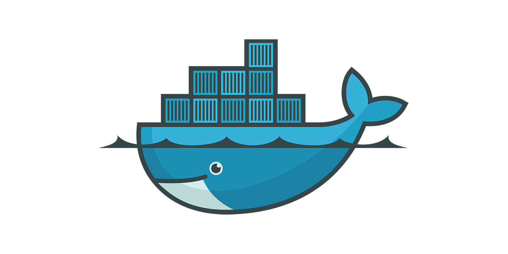

Docker, kontendoreetan jarritako softwarearen despliegea automatizatzen duen proiektu bat da, Linux, Mac OS eta Windows sistema eragileekiko abstrakzio eta automatizazio geruza gehigarri bat da.
Docker software sistema bat da, bere erabilera-espezializatua duena baina geroz eta garrantzitsuagoa bilakatzen ari dena, batez ere software garapen, banaketa eta erabilpen (DevOps) inguruan.
Laburbilduz, software garapen eta erabilpen modernoan tresna kritikoa bihurtu da. Bere eragina, batez ere, enpresa-inguruneetan, hodei-informatikan eta garatzaileen artean sumatzen da.
docker run -d --name some-mysql -e MYSQL_ROOT_PASSWORD=1234 -p 3306:3306 mysql:latest
volumen batekin
docker run -d --name some-mysql -e MYSQL_ROOT_PASSWORD=1234 -p -v my_mysql_volume:/var/lib/mysql 3306:3306 mysql:latest
Parametroak
-v /my/own/datadir:/var/lib/mysql (bind mount)
-v my_mysql_volume:/var/lib/mysql (docker volume)Sortu volumen bat dockerren komando baten erabiliz. Gero sortu datu base bat volumen horri erantsiz.
Izan 4 datu base batera contenedore bezela. (ez erantsi volumenik). Aldatu izenak eta portuak!. Orain, begiratu zure makinaren prosezuak eta memoriaren erabilera. Aldi berean, zenbat mysql contendore sortzeko gai zara?
Zein dira hurrengo komandoaren parametroak? Zer gertatuko da hau erabiliz gero?
docker run -e MYSQL_ROOT_PASSWORD=1234
-v C:\Users\yo\Documents\SistemaInformatikoak\sinfortolosaldealh\init.sql:/docker-entrypoint-initdb.d/init.sql
-p 3306:3306
mysql:latest
docker -d run -e MYSQL_ROOT_PASSWORD=1234 -v C:\Users\yo\Documents\SistemaInformatikoak\sinfortolosaldealh\init.sql:/docker-entrypoint-initdb.d/init.sql -p 3306:3306 mysql:latest
Sortu .sql script bat 3. ariketako komandoaren berdina, eta itsasi taula batzuk sortzeko eta datu batzuk ezartzeko textua (eskatu ChatGPTri).
Gure lantaldeak asko garatu dira, orain, gero eta konfigurazio parametro gehiago behar ditugu, gure docker commandoak asko luzatu dira! Nola egin genezake konfigurazio guzti hauek fitxategi baten bitartez ezartzeko?
docker pull dorowu/ubuntu-desktop-lxde-vnc:latest
sortu volumen bat, bi era dakizkigu volumenak
docker run -d `
--name ubuntu_desktop `
-v ubuntu-si:/dev/shm `
-p 6080:80 `
dorowu/ubuntu-desktop-lxde-vnc
Referentzia
https://computingforgeeks.com/run-ubuntu-linux-in-docker-with-desktop-environment-and-vnc/?expand_article=1
Sortu indexa index.html
Sortu Dockerfilea
FROM nginx
# Copiatu Index.html
COPY . /usr/share/nginx/html
Irudia sortu
docker build -t webPolita .
-t webPolita : Tag etiketa . contsolaren egungo kokapena (hemen Dockerfile bat egon behar da presente)
docker run --name webPolita -d -p 8080:80 web-polita